05 / DESIGN RESEARCH
LumaMorph
A deformable dynamic lamp driven by air pressure, exploring how soft robotics can create new relationships between material structure, light, and user interaction.
Rethinking How Lamps Change Light
In contemporary times, it has become commonplace to modify the range and emphasis of lighting in a given fixture by manipulating the probability of the light source. This project endeavors to identify an alternative solution for lamps by designing deformable dynamic structures driven by air pressure.
Traditional lamps mainly rely on knobs, gear switches or remote controls to adjust lighting intensity. In essence, this is achieved by adjusting the power of the light source. LumaMorph explores a different approach: changing the physical structure of the lamp itself.
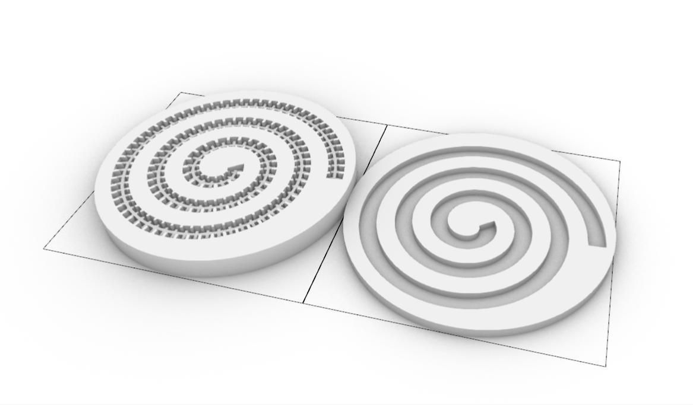
Deformation as a Lighting Interface
Through an understanding of materials and structures, two solutions were formed to produce changes in lighting intensity through structural deformation.
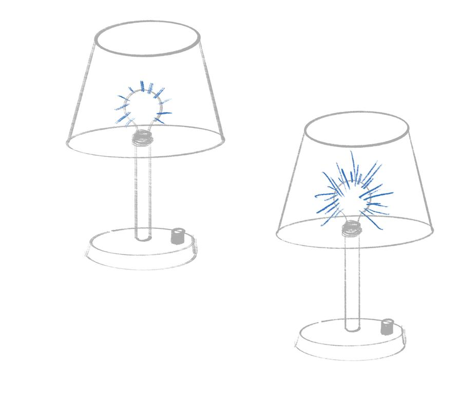
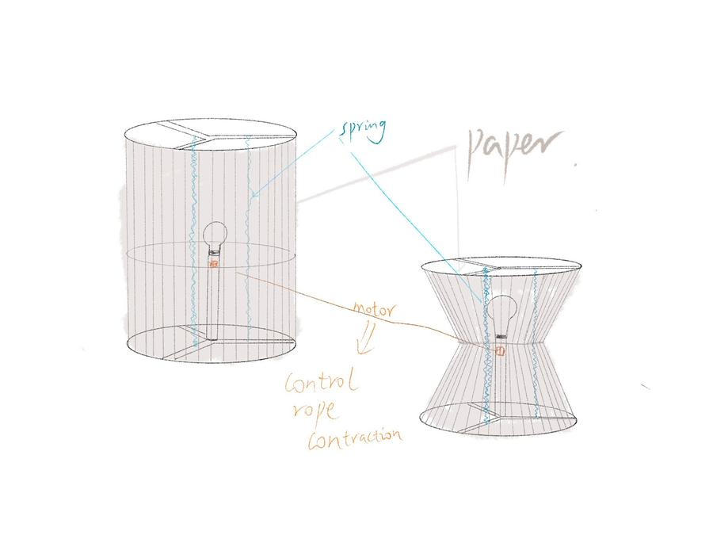
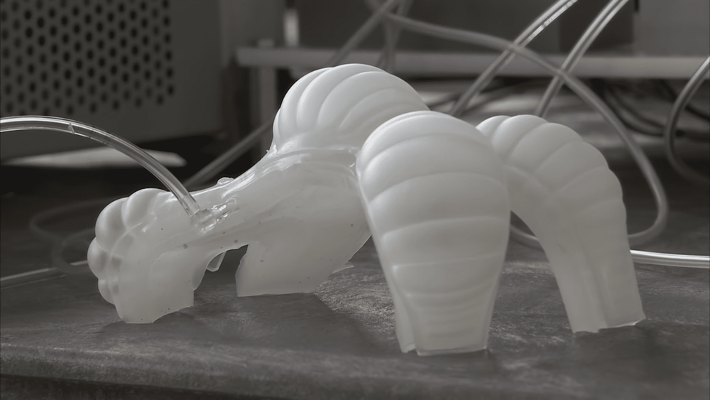
Soft Robotics and Bionic Movement
Soft Robotics is a bionic engineering method based on flexible materials, imitating the soft, deformable structure and movement of organisms in nature. It is driven by air pressure, hydraulic pressure or intelligent materials to achieve complex morphological changes such as stretching, bending, and twisting.
With the help of soft robotics technology, the structure is redesigned. The lamp can be dynamically adjusted through a flexible structure, bringing users a bionic and natural lighting experience.
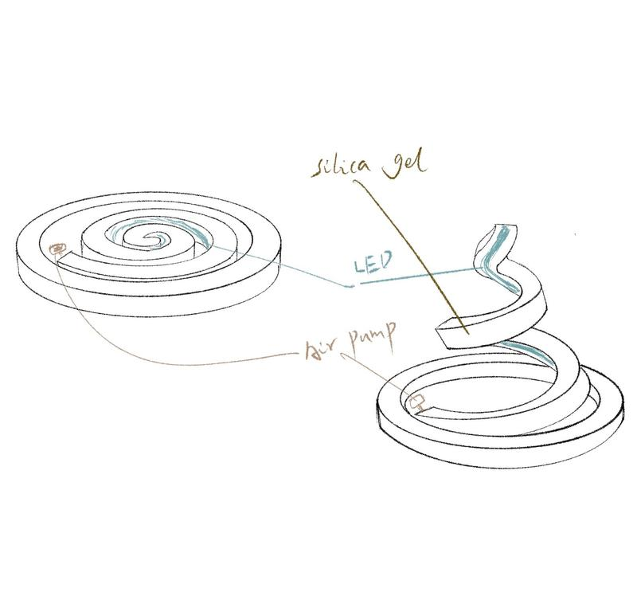
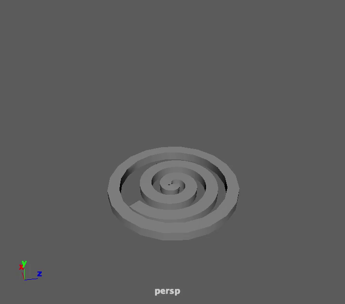
From Air Pump to Light
The fixture is composed of a base, which contains an air pump, a battery, and a control board. It also contains a silicone housing and an LED light bar. The air pump, concealed within the base, is controlled by the user through the controller.
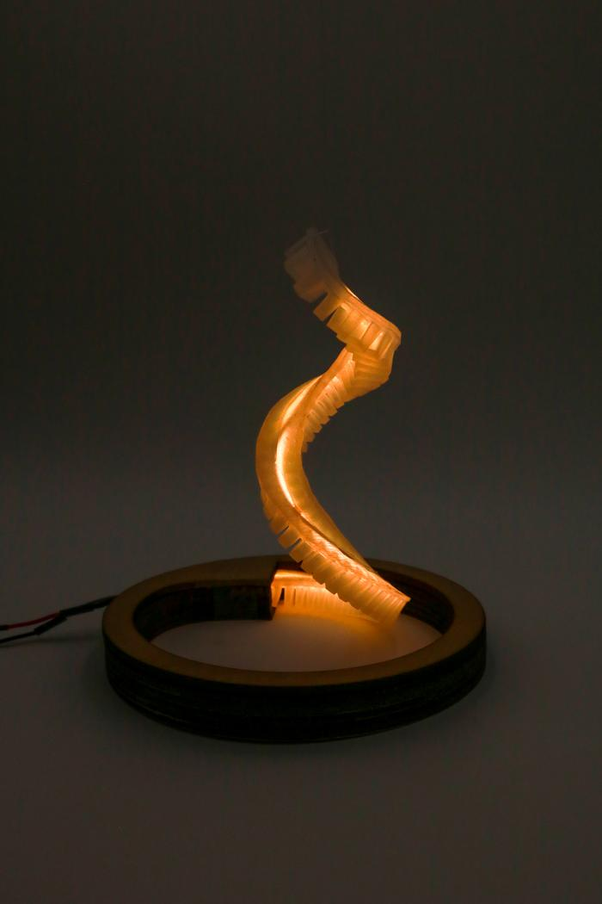
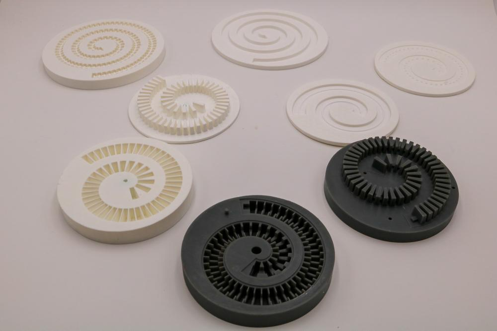
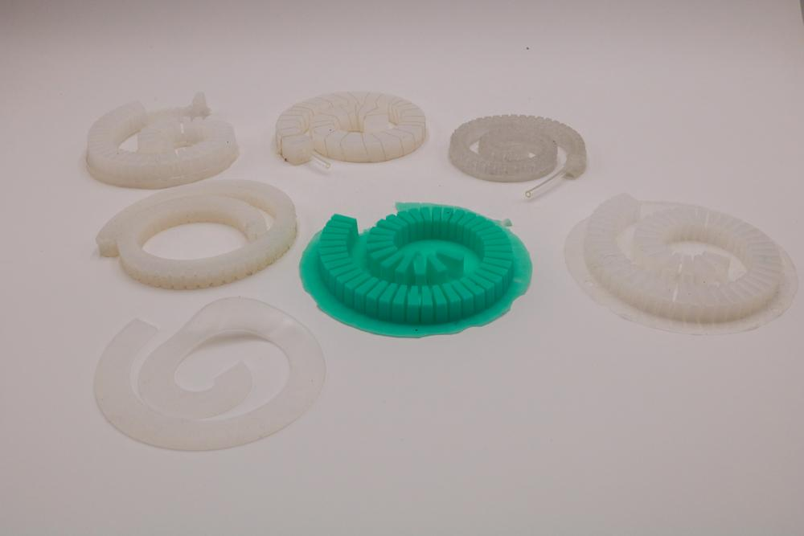
Testing Form Through Making
Design the mold required for the structure through 3D modeling, and prepare for silicone mold casting through 3D printing. The mold and silicone structure are iteratively updated based on test results.
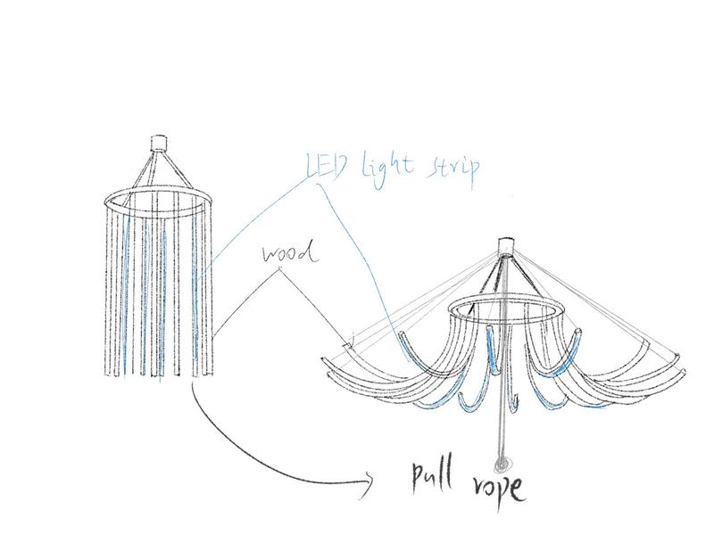
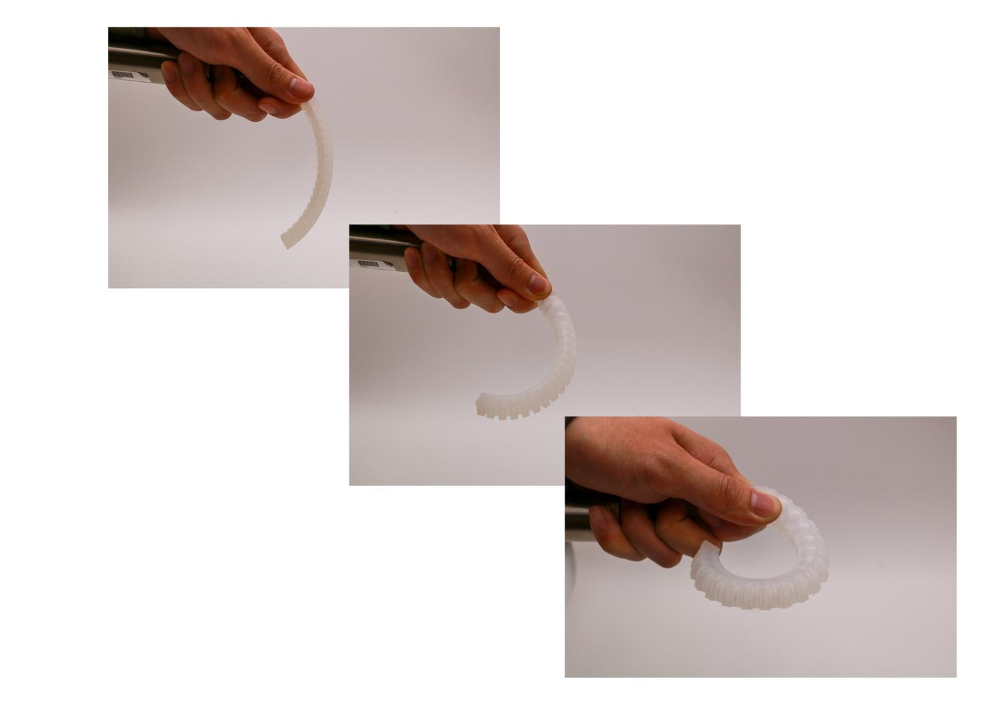
LumaMorph